Every post below is shown the way it will appear in the LinkedIn feed — final creatives, full captions, correct posting profile. Scroll like you would scroll LinkedIn. Tap “see more” to read any caption in full, and use the arrows on the two carousels.
Window10 July – 2 Aug
Posts12 (+2 page reshares)
Mix6 static · 2 carousel · 2 video · 2 long-form
CadenceMon · Wed · Fri
Three things to confirm while you scroll
Routing — the two long-form pieces, the POV post and Mark’s voiceover run from Mark’s profile (Brent’s VO from his), with the Aspen page resharing. Say the word and we schedule them that way.
Byline title — the quote cards sign Mark as “CEO”. Confirm that’s the title you want on public cards, and we’ll align every template to it.
The two voiceover videos (17 & 27 July) are in production — the placeholders show the approved direction; finished cuts come to you before their post dates.
Fri · 10 JulyStatic → animated video
Aspen Claims ServiceProperty Claims ServicesScheduled · 10 July 🌐
+ Follow
Same storm. Same geography. Same regional adjuster pool. Carriers still walk away with cycle times that differ by a wide margin.
The difference almost never sits in the field. It sits in the workflow upstream of it.
Three things separate the carriers who handle CAT cycle time well:
Intake routing — how fast a claim gets from FNOL to an assigned adjuster. The best operations have automated the routing most still run by hand.
Coverage decision authority — how far down the workflow a coverage call can be made without an escalation. Route every contested question to one review queue and you build a bottleneck the field can't clear.
Supplement protocol clarity — whether the adjuster knows, before leaving the property, what triggers a supplement and what doesn't. Without it, files reopen to settle questions that should have closed at first inspection.
None of this shows on the deployment dashboard. All of it shows up in the cycle time number.
If your hurricane post-mortem is underway, which of these three is costing you the most?
#PropertyClaims#InsuranceClaims#CATResponse
…see more
👍 Like💬 Comment🔁 Repost➤ Send
✎ Delivered as an 11-second animated visual (upgrade on the static version — both exist).
Sun · 12 JulyCarousel · Part 03 of How Claims Actually Work
Aspen Claims ServiceProperty Claims ServicesScheduled · 12 July 🌐
+ Follow
The first 24 hours of a claim shape everything that follows — and most policyholders never see the work that makes those hours feel calm.
Here's what actually happens in the first day, and why it matters more than the inspection itself.
Part 03 of How Claims Actually Work.
What did your first call after filing a claim feel like — managed, or a queue?
#PropertyClaims#InsuranceClaims#ClaimsManagement
…see more
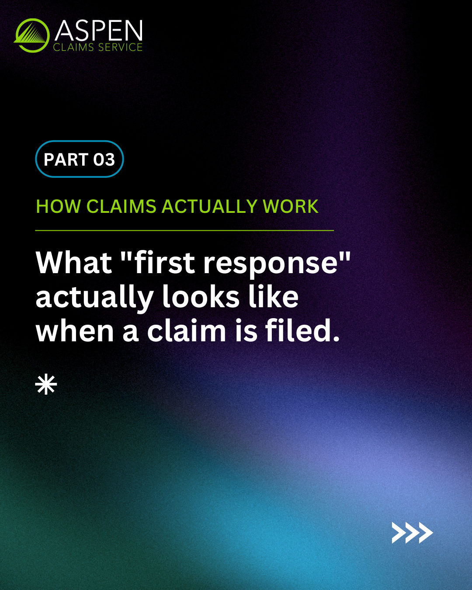
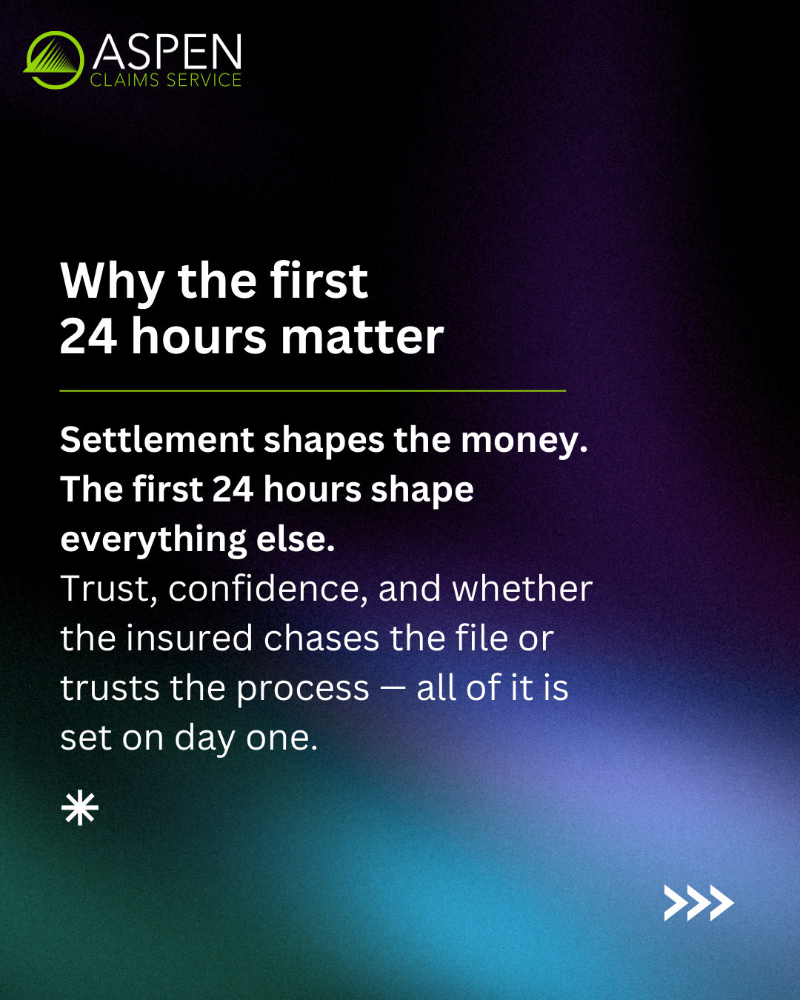
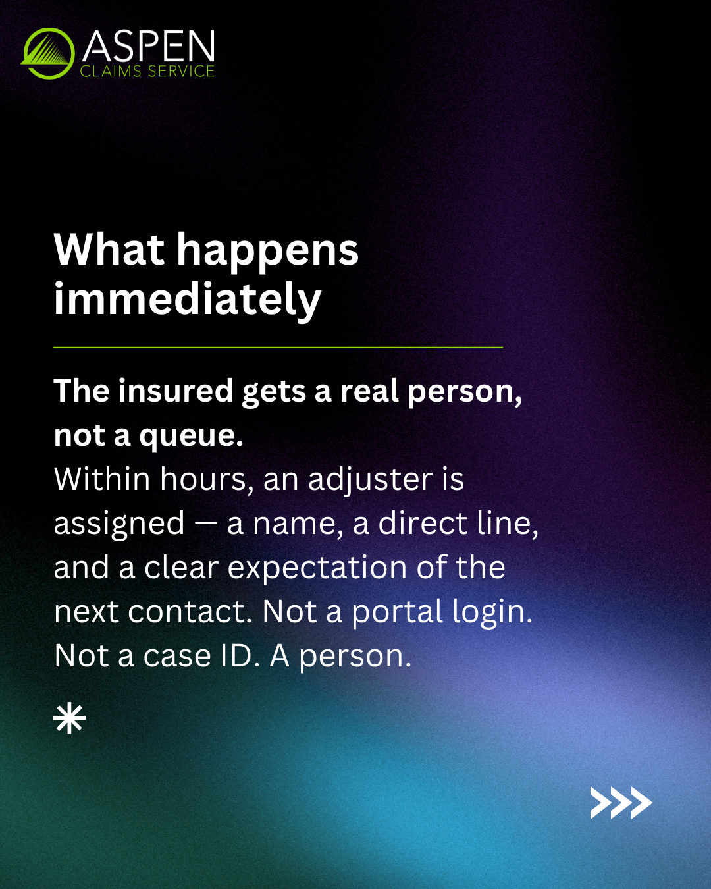
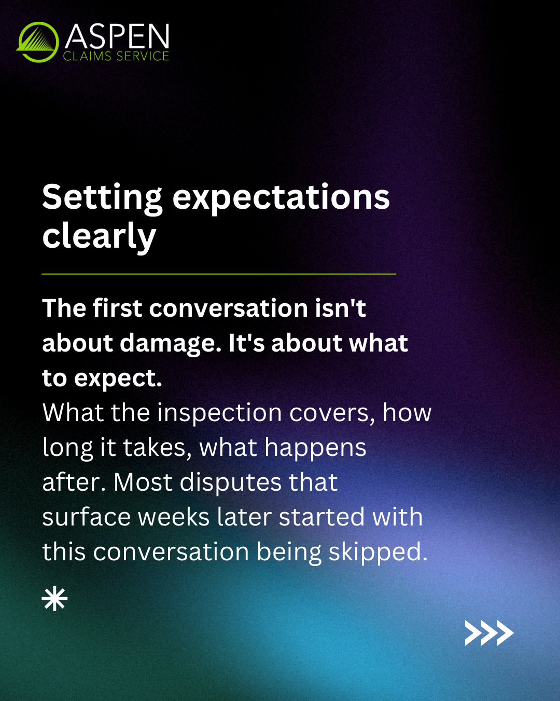
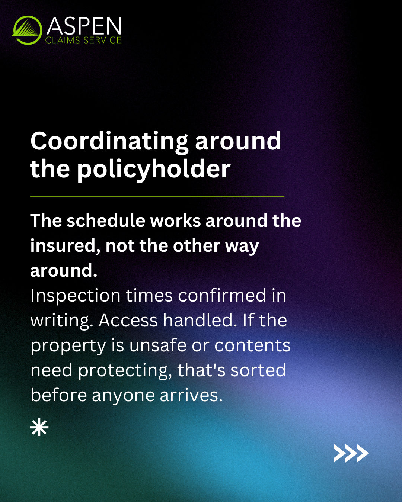
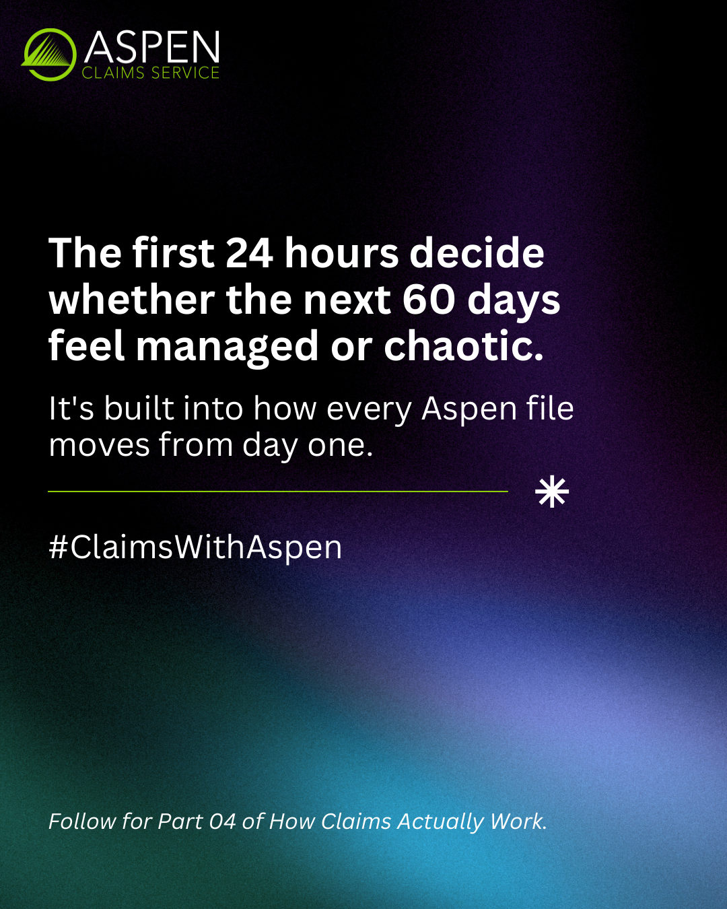
1/6
👍 Like💬 Comment🔁 Repost➤ Send
Mon · 13 JulyLong-form text post · Mark's profile
Mark VetrovecPresident & Co-Founder, Aspen Claims ServiceScheduled · 13 July 🌐
+ Follow
The RFP tells you who writes the best proposal. It rarely tells you who will perform best on your book.
That gap is where most disappointing partnerships begin — and it's the cheapest thing in the whole process to fix.
The standard questions are fine as far as they go: adjuster headcount, geographic coverage, average cycle time, cost per file, tech stack, SLAs, sample reports. They filter for proposal quality, not operational fit.
Here are the questions I'd add — the ones that tell you how a partner will actually run your files.
1. How does the partner's file standard get set?
Every claims partner will tell you their standards are high. The useful question is who decides what those standards are.
Some calibrate to whatever the carrier seems to accept, and the standard quietly drifts down to whatever passes review. It's invisible during deployment and expensive after.
Others set their standard independently — photo completeness, scope defensibility, coverage rationale documented in-line — applied the same way regardless of which desk is reviewing.
Ask them to walk you through what their QA reviewer looks for. If it's specific and independent of carrier preferences, that's the operation you want.
2. What is the QA layer actually catching, and how often?
Most partners report on submissions and closures. Far fewer report on what their internal QA caught before the file reached your desk.
QA that catches gaps, coverage misalignments, and scope errors before submission is doing the work that prevents reopens downstream. QA that rubber-stamps is exporting that work to your desk.
Ask how many files QA reviewed last quarter, how many needed revision, and what the common gaps were. The specificity of the answer tells you whether QA is real or a checkbox.
3. How are field adjusters trained, and how is that kept current?
Most RFPs ask about certifications and licenses. Far fewer ask how training is refreshed during the working year.
Partners who handle complex losses well tend to train mid-year, not just at hire — new regulatory developments, new documentation expectations, new coverage patterns from desks across the industry.
Ask about the last training session their adjusters completed. If it's specific and recent, the operation is paying attention.
4. What changes operationally during a CAT event?
Most partners describe CAT capability in capacity terms — deployable adjusters, geographic reach, surge availability. The useful question is what changes when the storm hits.
Do file standards hold under surge, or relax? Does QA continue, or move to sampling? Does communication discipline hold, or does the team go quiet because it's busy?
Ask for a specific story from a past CAT event — what worked, what didn't, what they changed after. Operational specifics separate the partners who've been through it from the ones talking in generalities.
5. Who owns the relationship — a rotating name, or a named point of contact?
Most deployments hand the carrier a field adjuster name that changes file to file, and continuity gets rebuilt with every claim.
Some partners run a desk adjuster model: a named contact who owns communication, status, and escalation across every file on your book, whichever field adjuster is on the ground. One relationship to manage, not a rotating list.
It's a structural question about how they operate. Ask it directly.
None of these get you a longer proposal. They get you a more useful one — and they surface operational fit while switching costs are still low.
The RFP is the cheapest place to learn what actually determines performance. Worth using the space deliberately.
What's the one question your last RFP didn't ask that you wish it had?
— Mark Vetrovec
CEO, Aspen Claims Service
…see more
👍 Like💬 Comment🔁 Repost➤ Send
✎ Runs from Mark's personal profile (routing pending your confirmation).
Mon · 13 JulyAspen page reshare of Mark's post
↻ Aspen Claims Service reshared this from Mark Vetrovec
Aspen Claims ServiceProperty Claims ServicesScheduled · 13 July 🌐
+ Follow
"Most RFPs compare partners against each other. The better ones compare each partner against what your operation actually needs."
— Mark Vetrovec, CEO · Aspen Claims Service
Five questions worth adding to your next claims RFP — the ones that surface how a partner will actually run your files.
Which one would change your shortlist?
#ClaimsManagement#InsuranceClaims#PropertyClaims
…see more
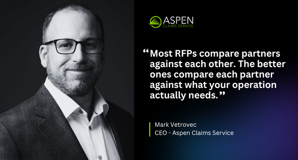
👍 Like💬 Comment🔁 Repost➤ Send
✎ Quote card reads “CEO – Aspen Claims Service” — confirm the byline title before posting.
Wed · 15 JulyStatic · Regulatory (kept general — no bills cited as law)
Aspen Claims ServiceProperty Claims ServicesScheduled · 15 July 🌐
+ Follow
California keeps raising the bar on wildfire claims — and the file standard that cleared last year doesn't always clear this year.
The direction of travel is consistent: documentation, additional living expense, and smoke are all getting more attention.
Documentation keeps widening. Pre-loss condition, evacuation timelines, and access constraints increasingly need to live in the file. The contemporaneous note discipline good adjusters already practice is closer to the baseline than the extra mile.
ALE is under closer review. Additional living expense windows get examined more carefully, especially on extended-displacement losses. The partners handling this well treat the ALE clock as part of the file from day one, not an afterthought.
Smoke claims are getting more attention. How smoke and residue damage is assessed and documented is a common friction point — and a common source of reopens when it's handled thinly at first inspection.
None of this is dramatic on its own. Cumulatively, it raises the standard on every California wildfire file. If you haven't refreshed your wildfire workflow in the last year, this is a good moment.
When did your California wildfire workflow last get a real look?
#WildfireResponse#PropertyClaims#InsuranceClaims
…see more
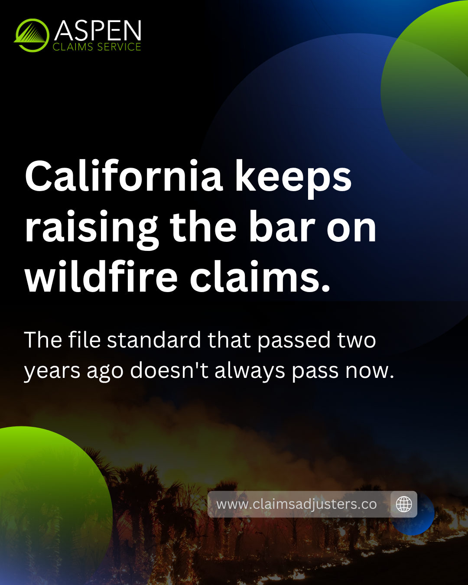
👍 Like💬 Comment🔁 Repost➤ Send
Fri · 17 JulyVideo · Brent VO — creative in production (AI voiceover)
BM
Brent MorrowOperations Manager, Aspen Claims ServiceScheduled · 17 July 🌐
+ Follow
The carrier desk shapes field adjuster performance more than most carriers realize.
A short one from Brent on why desk responsiveness is a cycle-time lever hiding in plain sight.
How fast does your desk answer a coverage call?
#ClaimsOperations#InsuranceClaims#PropertyClaims
…see more
Creative in production · AI voiceover
BM
“The desks that get the cleanest files aren't the ones with the most aggressive SLAs.”Brent Morrow · Operations Manager · Aspen Claims
👍 Like💬 Comment🔁 Repost➤ Send
✎ Video not yet produced — placeholder shows the approved visual direction.
Mon · 20 JulyStatic · Supplements
Aspen Claims ServiceProperty Claims ServicesScheduled · 20 July 🌐
+ Follow
Most supplements aren't surprises. They're documentation failures that revealed themselves later.
A supplement is what happens when a scope written in the field couldn't carry the full story of the loss. The damage was always there. The note wasn't.
This is why contemporaneous documentation matters more than any process diagram a partner can show you. The scope that captures adjacent damage at first inspection produces a settlement that closes. The one that misses it produces a supplement, a delay, a call from a frustrated policyholder, and a carrier dollar paid twice.
The work to prevent supplements is done before the adjuster leaves the property. Photos taken with intent. Measurements logged, not estimated. Adjacent areas walked, not assumed.
It's not glamorous. It's also the difference between a file that closes once and a file that closes three times.
What's the last supplement you saw that a better first inspection would have prevented?
#ClaimsOperations#PropertyClaims#PolicyholderExperience
…see more
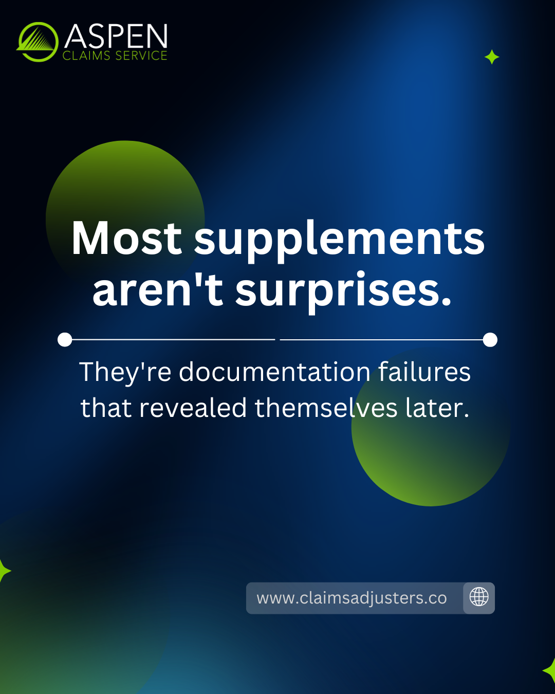
👍 Like💬 Comment🔁 Repost➤ Send
Wed · 22 JulyStatic · Adjuster turnover
Aspen Claims ServiceProperty Claims ServicesScheduled · 22 July 🌐
+ Follow
The adjuster who opens a file often isn't the one who closes it — and that handoff is one of the most reliable predictors of quality problems downstream.
When an adjuster picks up a partially-worked file from a colleague who's rotated out, two things happen. They rebuild context the cycle time number never accounts for. And the memory of the original inspection — the judgment calls, the coverage questions considered, the useful thing the policyholder mentioned — usually gets lost in the handoff.
The carriers running cleaner files tend to work with partners who keep mid-deployment turnover low. Not zero — that's unrealistic — but low.
Three things worth checking on your next partner review:
How many of your files changed adjusters between intake and closure last quarter?
Of those, how many produced a supplement or reopen within 90 days?
Is your partner reporting on adjuster continuity at all — or is that data sitting in their system, never surfacing?
The partners who manage this well usually run a single point of contact that holds the file's continuity even when the field adjuster changes. The ones who don't, don't.
Do you actually know how many of your files changed hands last quarter?
#ClaimsOperations#PropertyClaims#ClaimsManagement
…see more
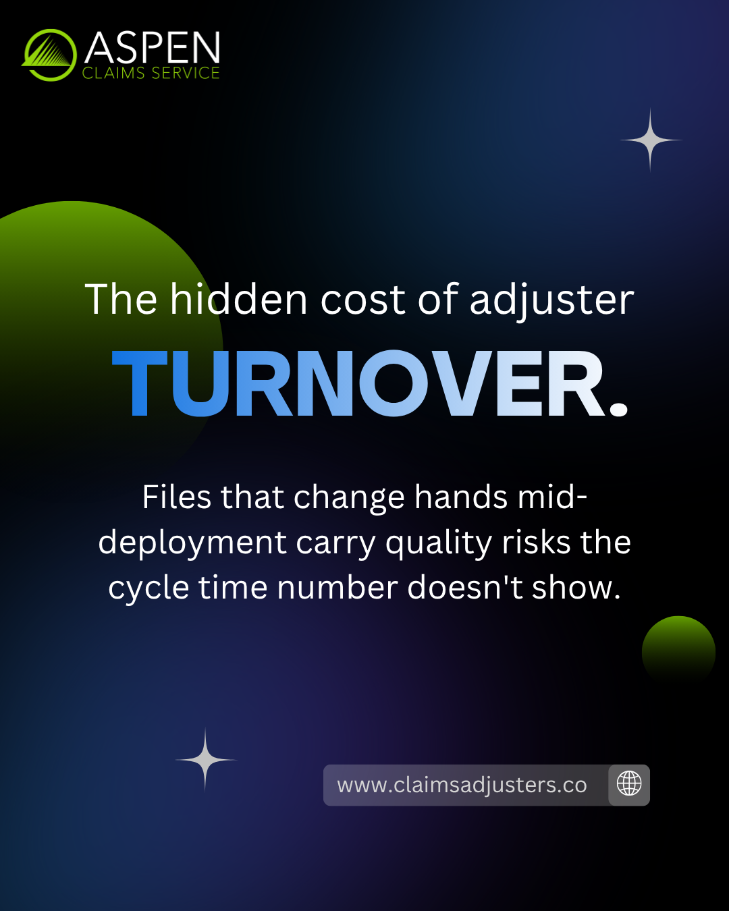
👍 Like💬 Comment🔁 Repost➤ Send
Fri · 24 JulyMark POV · Mark's profile
Mark VetrovecPresident & Co-Founder, Aspen Claims ServiceScheduled · 24 July 🌐
+ Follow
The question I get from claims leadership more than any other isn't about cycle time or cost. It's some version of: how do we get policyholders to trust the claims process again?
Trust in claims has been sliding for years — opaque communication, settlements that miss expectations, technology that distances instead of connects.
Here's what I'd say. Trust doesn't get rebuilt at the policy level. It gets rebuilt at the file level — one claim, one policyholder at a time. The claim is the only part of the insurance product the customer actually experiences. Everything else is marketing.
The carriers pulling ahead on satisfaction aren't running better campaigns. They're running tighter operations — named adjusters, direct lines, clear expectations, decisions made by people who can be reached.
It's not complicated. It is hard, because operational consistency at scale is always hard. But it's the only thing that moves the trust number.
When your policyholders describe their last claim, what do you want them to say?
#PolicyholderExperience#InsuranceClaims#ClaimsManagement
…see more
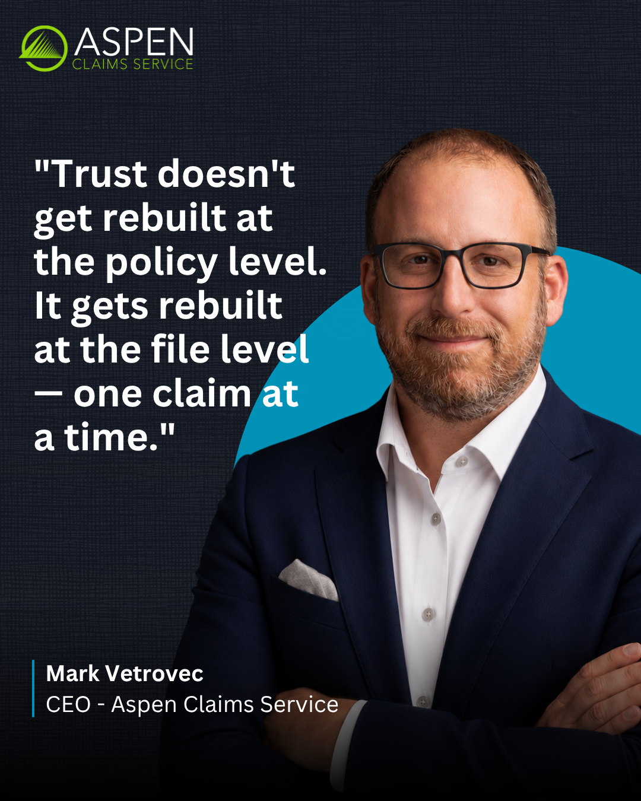
👍 Like💬 Comment🔁 Repost➤ Send
✎ Card reads “CEO – Aspen Claims Service” — confirm byline title. Routing to Mark's profile pending your confirmation.
Mon · 27 JulyVideo · Mark VO — creative in production (AI voiceover)
Mark VetrovecPresident & Co-Founder, Aspen Claims ServiceScheduled · 27 July 🌐
+ Follow
Why isn't Aspen the cheapest option in the IA market? It's a fair question, and Mark answers it head-on.
The cheapest partner isn't actually cheap — it just moves the cost to a different line of your P&L.
When you price a claims partner, are you pricing the file, or the full cost of it a year later?
#ClaimsManagement#InsuranceClaims#ClaimsOperations
…see more
Creative in production · AI voiceover
“The cheapest partner in the market is cheap because something in the operation isn't there.”Mark Vetrovec · Aspen Claims Service
👍 Like💬 Comment🔁 Repost➤ Send
✎ Video not yet produced — placeholder shows the approved visual direction.
Wed · 29 JulyStatic · Texas appraisal
Aspen Claims ServiceProperty Claims ServicesScheduled · 29 July 🌐
+ Follow
The cleaner the original scope, the less room appraisal has to expand the claim.
Texas has been tightening scrutiny on appraisal — how it's triggered, how appraisers are selected, what happens when the process stalls, and how awards get documented. The operational implications for adjusters working Texas property files are clearer now than they were even six months ago.
Three things worth flagging:
Appraisal panel documentation needs to start earlier. Qualifications, communications, and decision rationale for everyone involved — not just the umpire — increasingly get reviewed downstream.
Pre-appraisal scope detail matters more. Thin original scopes are where appraisal awards diverge most from initial reserves. A clean scope leaves less room to expand the claim into territory the original investigation didn't support.
Communication discipline is under scrutiny. What gets said, when, and to whom during appraisal is reviewable — and the carriers handling it well have protocols that protect the file's defensibility throughout.
If your Texas file workflow hasn't been updated for these shifts, this quarter is a reasonable time.
How early does appraisal documentation start in your Texas files — at the panel, or before it?
#TexasInsurance#PropertyClaims#ClaimsManagement
…see more
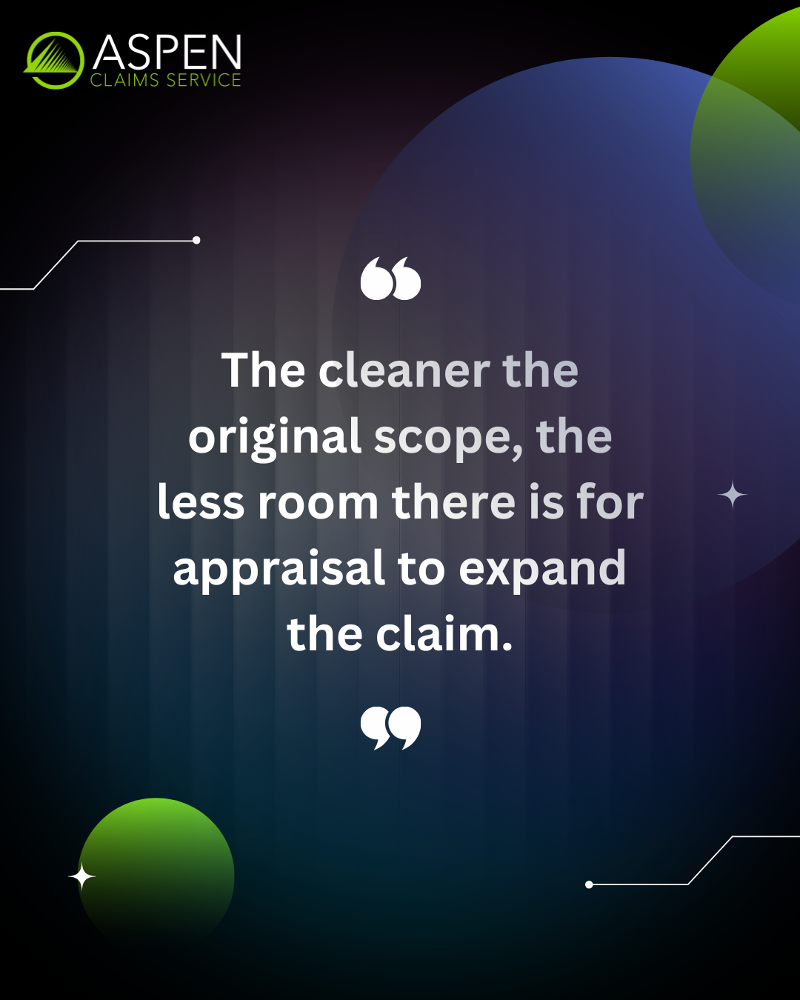
👍 Like💬 Comment🔁 Repost➤ Send
Fri · 31 JulyCarousel · Part 04 of How Claims Actually Work
Aspen Claims ServiceProperty Claims ServicesScheduled · 31 July 🌐
+ Follow
Coverage is one of the most-used words in insurance and one of the least understood — and most people learn what their policy actually covers in the middle of a loss, the worst possible time.
A plain-language walk-through of what coverage means, where the gaps usually sit, and how to read your own policy before you need to.
Part 04 of How Claims Actually Work.
When did you last actually read your policy's exclusions page?
#PropertyClaims#InsuranceClaims#ClaimsManagement
…see more
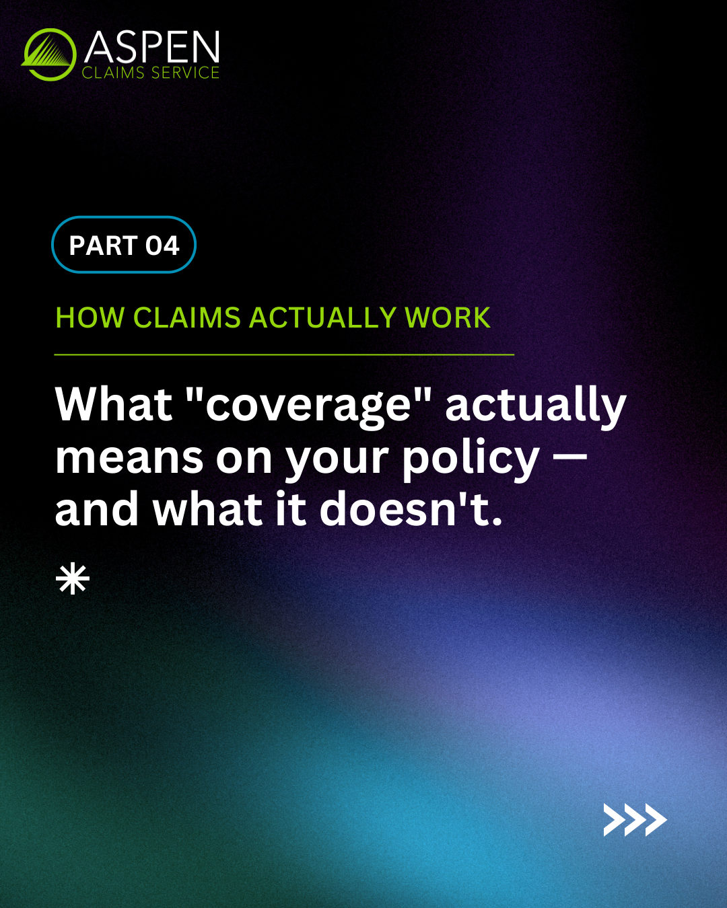
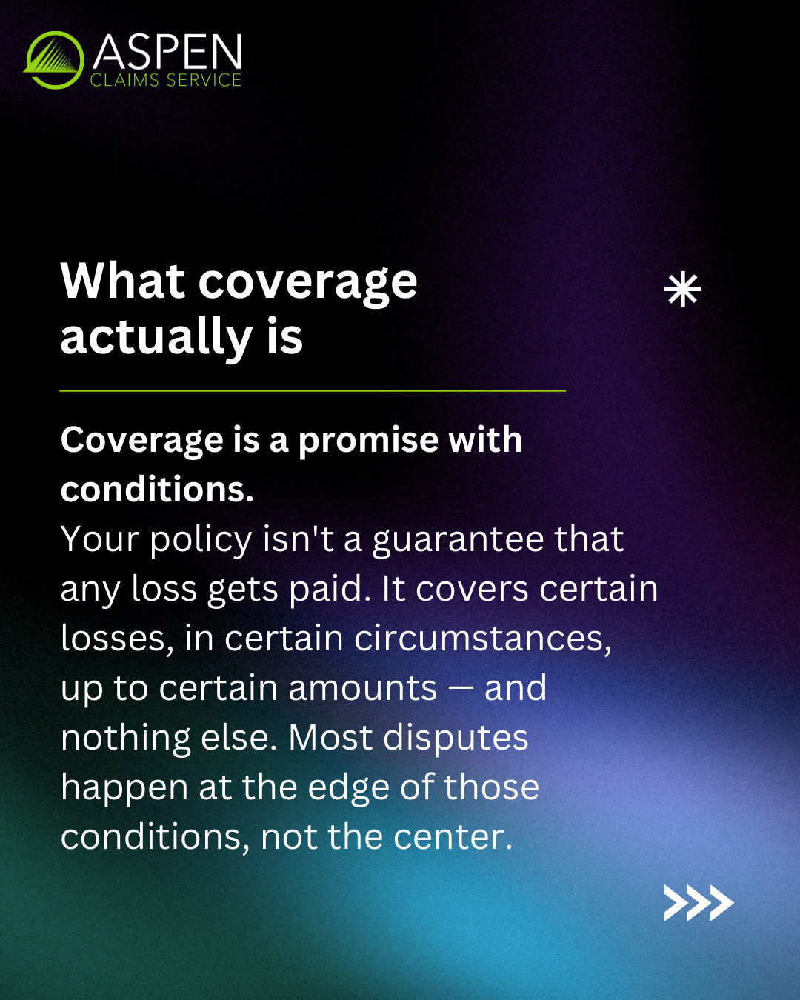
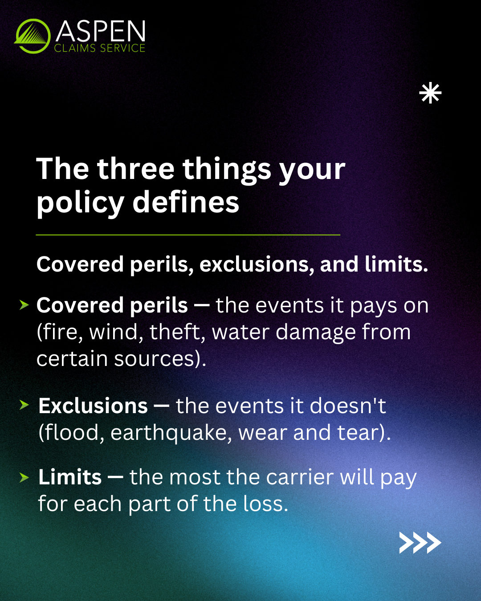
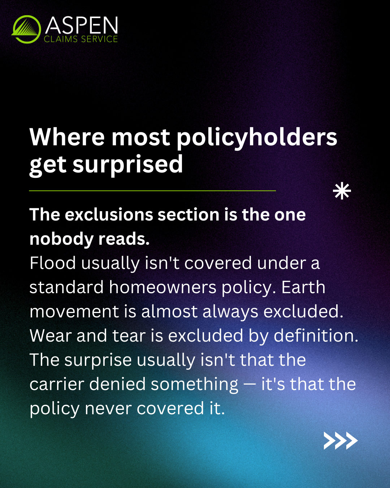
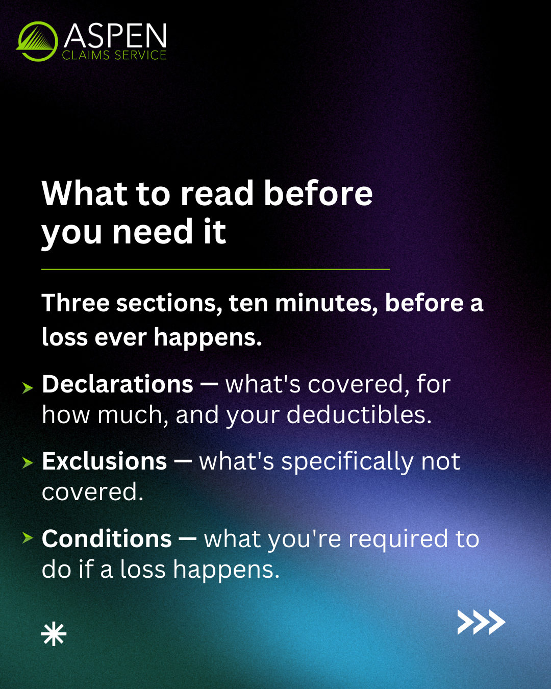
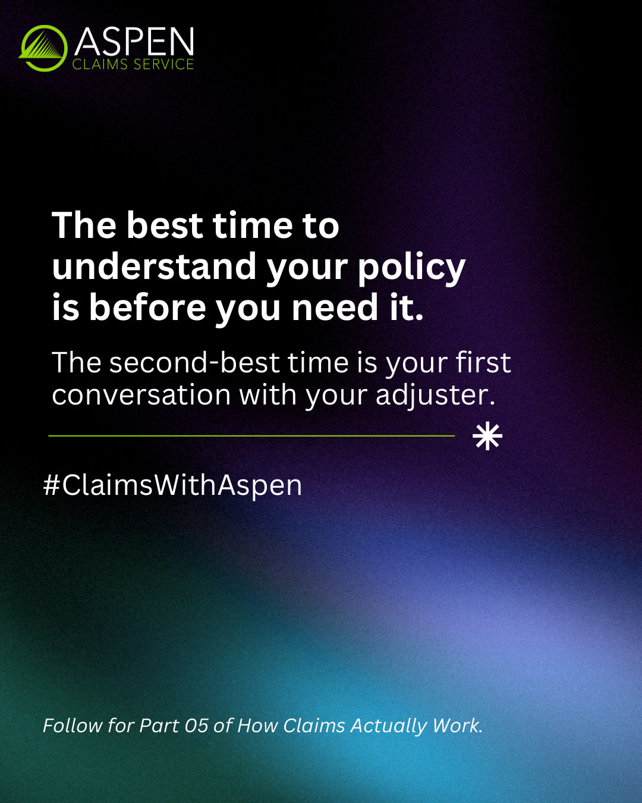
1/6
👍 Like💬 Comment🔁 Repost➤ Send
Sun · 2 AugLong-form text post · Mark's profile
Mark VetrovecPresident & Co-Founder, Aspen Claims ServiceScheduled · 2 Aug 🌐
+ Follow
A file that closes fast and reopens later costs more than one that closes a little slower and stays closed. Most CAT scorecards can't see that.
Carriers measure CAT response on a short list of numbers — cycle time, files closed per week, deployment speed, cost per file. They tell you how quickly a partner moved through volume. They don't tell you what the volume actually cost.
Here's the problem. A file that closes quickly and reopens months later is not the same file as one that closes a bit slower and stays closed. The first one costs more. The cost just lands in a different column of the P&L, well after the deployment dashboard everyone watched during the event has gone quiet.
Most carriers never run that math all the way out.
Why the cost stays hidden
Cycle time gets reported during the deployment. Supplements and reopens get reported much later — by which point the event that produced them is closed in everyone's mind.
Different teams own different numbers. The CAT team owns deployment speed. Claims operations owns reopen rates. Each optimizes for the number it's accountable to, and nobody runs the full-cycle cost that ties them together.
Cost per file gets logged at close, not at final resolution. A file that closes, then reopens for more, shows up as two smaller numbers in two different reports — never as the single, larger true cost.
None of this is anyone's fault. It's a measurement problem. The dashboard was built for visibility during the event, not for full-lifecycle cost.
What changes when you measure it properly
The partners with the fastest cycle times aren't always the most cost-effective. Speed without process discipline produces files that don't stay closed, and the cost shows up later.
The partners who run a little slower but reopen far less are often the better commercial decision. The math doesn't work in the obvious direction — it works in the direction the data actually supports.
And the pressure points worth fixing usually sit upstream of the field: intake routing, coverage decision authority, and documentation standards that hold under surge. Those move total cost more than any speed gain in the field can.
What I'd suggest after this season
Look at each major event two ways: not just how fast files closed, but how many quietly reopened after they did. Put those side by side and the real story shows up.
Then ask which partners had the smallest gap between how fast they closed and what the file finally cost. Those are the operations actually delivering what the speed numbers seem to promise.
Claims leadership is going to get measured differently over the next decade — by full lifecycle cost, the way reinsurers and regulators are already moving. The partners who thrive in that world are the ones built for total cost, not for the dashboard number that runs during the event.
Fast looks cheap. It usually isn't.
So before the next hurricane season, one question: are you measuring what your CAT response cost during the event, or what it cost once every file finally stopped moving?
— Mark Vetrovec
CEO, Aspen Claims Service
…see more
👍 Like💬 Comment🔁 Repost➤ Send
✎ Runs from Mark's personal profile (routing pending your confirmation).
Sun · 2 AugAspen page reshare of Mark's post
↻ Aspen Claims Service reshared this from Mark Vetrovec
Aspen Claims ServiceProperty Claims ServicesScheduled · 2 Aug 🌐
+ Follow
"Faster looks cheaper. Once the whole lifecycle of the file shows up in the numbers, it usually isn't."
— Mark Vetrovec, CEO · Aspen Claims Service
Why a file that closes fast but reopens later costs more than one that closes a bit slower and stays closed — and why most CAT scorecards can't see it.
Are you measuring what your CAT response cost during the event, or after every file finally stopped moving?
#CATResponse#ClaimsManagement#InsuranceClaims
…see more
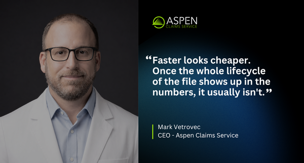
👍 Like💬 Comment🔁 Repost➤ Send
✎ Quote card reads “CEO – Aspen Claims Service” — confirm the byline title before posting.
Approve / flag each post above, then copy the summary and paste it back to Harshit.